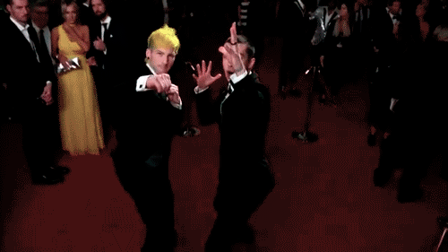

Twenty øne Piløts
Premiações/Indicações
| Ano | Premiação | Prêmio | Nominação | Resultado |
| 2013 | MTV Video Music Award | Artista Revelação | Holding On to You | Indicado |
| 2013 | MTV Europe Music Award | Best Push Act | Twenty One Pilots | Indicado |
| 2014 | Alternative Press Music Awards | Best Live Band | Twenty One Pilots | Indicado |
| 2014 | Alternative Press Music Awards | Album of the Year | Vessel | Indicado |
| 2014 | Alternative Press Music Awards | Breakthrough Band | Twenty One Pilots | Indicado |
| 2014 | Alternative Press Music Awards | Best Drummer | Josh Dun | Indicado |
| 2015 | Alternative Press Music Awards | Best Live Band | Twenty One Pilots | Indicado |
| 2015 | Alternative Press Music Awards | Most Dedicated Fans | Twenty One Pilots | Indicado |
| 2015 | Alternative Press Music Awards | Tumblr Fandom of the Year | Twenty One Pilots | Indicado |
| 2015 | Teen Choice Award | Choice Rock Song | Tear in My Heart | Indicado |
| 2016 | iHeartRadio Music Awards | Alternative Rock Artist of the Year | Twenty One Pilots | Venceu |
| 2016 | iHeartRadio Music Awards | Alternative Rock Song of the Year | Stressed Out | Venceu |
| 2016 | Billboard Music Awards | Top Duo/Group | Twenty One Pilots | Indicado |
| 2016 | Billboard Music Awards | Top Rock Artist | Twenty One Pilots | Venceu |
| 2016 | Billboard Music Awards | Top Rock Song | Stressed Out | Indicado |
| 2016 | Billboard Music Awards | Top Rock Album | Blurryface | Venceu |
| 2016 | Alternative Press Music Awards | Artist of the Year | Twenty One Pilots | Venceu |
| 2016 | Alternative Press Music Awards | Album of the Year | Blurryface | Venceu |
| 2016 | Alternative Press Music Awards | Best Music Video | Stressed Out | Indicado |
| 2016 | Kerrang! Awards | Best Live Band | Twenty One Pilots | Indicado |
| 2016 | Kerrang! Awards | Best Fanbase | Twenty One Pilots | Venceu |
| 2016 | Teen Choice Award | Choice Rock Song | Stressed Out | Indicado |
| 2016 | MTV Video Music Awards | Best Rock Video | Heathens | Venceu |
| 2017 | Grammy Award | Best Pop/Duo Group Performance | Stressed Out | Venceu |
(informações retiradas de https://www.wikipedia.org/)